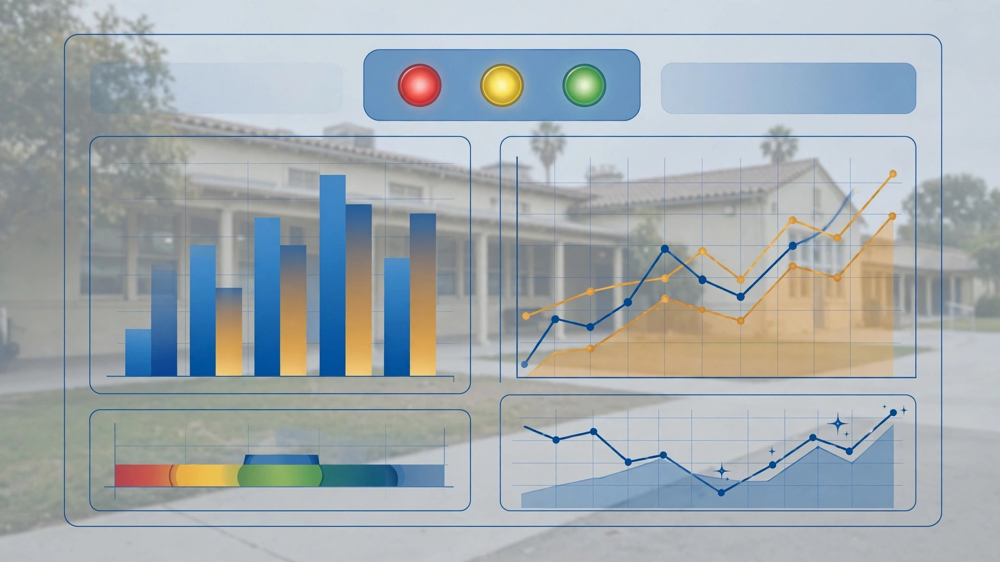

Automated "Do No Harm" Accountability System for K-12 Public Education with Outcome-Triggered Funding Portability, Subgroup-Level Threshold Enforcement, and AI-Driven Early Warning

Abstract
Disclosed is an automated accountability system for K-12 public education — modeled on the federal "Do No Harm" earnings test enacted in the One Big Beautiful Bill Act (effective July 1, 2026) for higher education — that continuously ingests school-level and program-level outcome data from state assessment systems (including California's CAASPP/SBAC, the California School Dashboard, graduation rates, chronic absenteeism rates, and the College/Career Indicator), applies configurable "Do No Harm" thresholds at both aggregate and demographic-subgroup levels, and triggers automated accountability actions — including portable per-pupil funding reallocation, real-time parent notification with ranked alternative school options, AI-driven early warning for schools approaching failure thresholds, evidence-based remediation plan generation, and public transparency dashboards — when schools or programs chronically fail to meet minimum outcome standards. The system applies the core federal logic (program loses access to public funding if outcomes do not exceed a baseline for two of three consecutive years) at the K-12 level, with the critical addition of subgroup-level enforcement that prevents aggregate averages from masking disparities for historically underserved student populations.
Field of the Invention
This invention relates to automated educational accountability systems, specifically to methods and systems for applying outcome-based "Do No Harm" threshold logic to K-12 public school performance data with automated consequence triggers, funding portability mechanisms, and AI-driven predictive analytics for school-level outcome monitoring.
Background
The federal "Do No Harm" earnings test, enacted as part of the One Big Beautiful Bill Act and effective July 1, 2026, represents a structural shift in higher education accountability. For the first time, federal policy requires postsecondary programs to demonstrate that their graduates earn more than comparable workers with only a high school diploma. Programs that fail this test for two of three consecutive years lose access to federal student loans — a program-level, outcome-based accountability mechanism with automatic funding consequences. The U.S. Department of Education proposed implementing regulations (RIN 1840-AE06) that compare graduate earnings to state-level high school diploma holders, with public comment closing May 20, 2026.
No analogous automated, outcome-triggered accountability system exists for K-12 public education in California or any other state. The closest existing frameworks — the California School Dashboard (established under AB 1040, 2016), the Local Control Funding Formula (LCFF, enacted 2013 under AB 97), and the federal Every Student Succeeds Act (ESSA, 2015) accountability tiers (Comprehensive Support and Improvement, Additional Targeted Support and Improvement, and Targeted Support and Improvement) — all rely on manual identification, discretionary intervention, and multi-year bureaucratic processes with no automated funding consequences.
California's K-12 outcomes present a compelling case for automated accountability. On the 2024-25 CAASPP, only 48.82% of California students met or exceeded the ELA standard and only 37.30% met or exceeded the math standard — meaning a majority of students fail to demonstrate grade-level proficiency. Achievement gaps remain severe: 2025 CAASPP data from EdSource shows 32.75% of Black students and 38.84% of Hispanic students met ELA standards, compared to 61.80% of white students and 74.36% of Asian students. In math, 20.06% of Black students met standards versus 70.30% of Asian students — a 50-percentage-point gap. On the 2024 NAEP, California ranked 36th among states in 8th-grade mathematics (average score 269 vs. national average 272) and only 25% of 8th-graders scored at or above Proficient in math. The Education Recovery Scorecard (Harvard/Stanford, February 2025) found that average California student achievement remained 31% of a grade equivalent below 2019 levels in math and 40% in reading. Chronic absenteeism in California rose from 12% of students in 2019 to 30% in 2022.
Despite these outcomes, California's accountability system — built around the Dashboard's color-coded indicators (Blue, Green, Yellow, Orange, Red), the LCFF/LCAP planning process, and ESSA's CSI/ATSI/TSI tiers — has no mechanism for automatic funding consequences when schools chronically underperform. Schools can remain in "Red" status for multiple consecutive years without any mandatory funding reallocation, without parents receiving automatic notification of alternative options, and without any automated remediation trigger. The School Accountability Report Card (SARC), required annually under California Education Code § 35256, provides information but triggers no consequences.
No prior art describes: (a) an automated system that applies "Do No Harm" threshold logic from higher education to K-12 with automatic funding portability triggers; (b) subgroup-level threshold enforcement that independently evaluates outcomes for each demographic group, preventing aggregate masking; (c) AI-driven early warning for school-level outcome trajectories; or (d) automated evidence-based remediation plan generation linked to accountability trigger events.
Detailed Description
1. Automated Outcome Monitoring Engine
The system continuously ingests school-level and program-level outcome data from multiple authoritative California data sources: CAASPP/SBAC assessment results (ELA and Mathematics, grades 3-8 and 11) from the CDE Research Files; California School Dashboard indicators including academic performance, chronic absenteeism, graduation rate, suspension rate, English Learner progress, and the College/Career Indicator (CCI); four-year adjusted cohort graduation rates from CDE DataQuest; A-G completion rates (the University of California/CSU admission course requirements in History/Social Science, English, Mathematics, Laboratory Science, Language Other Than English, Visual and Performing Arts, and College-Preparatory Elective); English Learner reclassification rates; and longitudinal student-level data linked across school years. Data ingestion occurs within 72 hours of each state data release, with automated validation against historical ranges to flag anomalies. Each school receives a composite outcome vector updated at minimum annually and supplemented with interim assessment data where available.
2. "Do No Harm" Threshold Engine
The threshold engine applies configurable "Do No Harm" failure criteria modeled on the federal higher education test. For each school and each assessed program or grade band, the engine compares school-level outcomes against a baseline — either the statewide median, a demographically adjusted regional peer group, or a fixed minimum standard (e.g., at least 25% of students meeting grade-level proficiency). A school "fails" the Do No Harm test for a given year when its outcome score falls below the applicable baseline. Consistent with the federal model's two-of-three-year rule, a school enters "accountability trigger" status when it fails for two of three consecutive assessment years. The threshold engine supports multiple configurable trigger profiles: academic proficiency (CAASPP-based), graduation rate, chronic absenteeism, A-G completion, CCI, and composite indices. Schools that would be classified as CSI, ATSI, or TSI under ESSA are automatically flagged for threshold evaluation across all profiles.
3. Automated Funding Portability Trigger
When a school enters accountability-trigger status, the system activates a portable per-pupil funding mechanism. Under California's LCFF, base funding follows a per-pupil formula (approximately $12,300 per ADA in 2025-26) with supplemental and concentration grants for high-need students. The portability trigger redirects the per-pupil allocation — base, supplemental, and concentration — to follow the student rather than remain with the institution. Parents of students enrolled at accountability-triggered schools receive a portable funding authorization that can be applied to: any non-triggered public school in the district or a neighboring district (under existing inter-district transfer provisions in Education Code § 46600); charter schools authorized under Education Code § 47600 et seq.; or state-approved alternative programs. The funding portability does not reduce total Proposition 98 funding — it redirects the per-pupil share from the failing institution to the receiving school chosen by the parent.
4. Parent Notification and School Choice Activation
When a school enters accountability-trigger status, the system generates automated notifications to all parents and guardians of enrolled students. Notifications are delivered via the school's existing communication channels (email, SMS, postal mail per Education Code § 48985 language-access requirements) within 30 days of the trigger event. Each notification includes: the specific outcome metrics that triggered accountability status; a comparison of the school's outcomes to the applicable baseline and to nearby schools; a ranked list of alternative school and program options within a 15-mile radius, ordered by outcome performance on the same metrics that triggered the failing school's status; the portable per-pupil funding amount available for transfer; and step-by-step instructions for exercising inter-district or intra-district transfer. The ranked alternative list draws on the same outcome data in the monitoring engine, ensuring parents receive a data-grounded comparison rather than anecdotal reputation.
5. AI-Driven Early Warning System
A predictive analytics module uses longitudinal trend analysis to identify schools likely to cross accountability thresholds before they actually do. The model ingests five years of assessment data, chronic absenteeism trajectories, teacher retention rates (from Commission on Teacher Credentialing data), enrollment trends, and interim assessment signals where available. Using gradient-boosted time-series models trained on historical school trajectories — including the trajectories of the approximately 1,000 California schools that have entered CSI or ATSI status since ESSA implementation — the system generates 12-month and 24-month probability scores for threshold crossing. Schools exceeding a configurable probability threshold (default: 60% likelihood of crossing within 24 months) receive "early warning" designation, triggering proactive resource allocation and technical assistance before formal accountability consequences activate. This creates a response window that does not exist in any current accountability system, which by design only identifies failure after it has already occurred.
6. Subgroup-Level Threshold Enforcement
The system applies "Do No Harm" thresholds independently for each demographic subgroup defined under ESSA and the California Dashboard: race/ethnicity (Black/African American, Hispanic/Latino, White, Asian, Pacific Islander, Filipino, American Indian/Alaska Native, Two or More Races); socioeconomic status (socioeconomically disadvantaged as defined by free/reduced-price meal eligibility or parent education level); English Learner status (current EL, Reclassified Fluent English Proficient); students with disabilities (as defined under IDEA); foster youth; and homeless youth. A school triggers accountability status if any subgroup of 30 or more students fails the Do No Harm threshold for two of three consecutive years, even if the school's aggregate performance meets the baseline. This directly addresses the documented pattern in which aggregate proficiency rates mask severe disparities — for example, a school with 50% overall CAASPP proficiency may have 15% proficiency among its Black students and 12% among its English Learners. Current California Dashboard indicators flag subgroup performance with color codes but trigger no automatic consequences for persistent subgroup-level failure. This system makes subgroup accountability a binding constraint, not an informational display.
7. Automated Remediation Plan Generation
When a school enters accountability-trigger status, the system generates an evidence-based remediation plan by matching the school's specific failure profile (which metrics failed, by how much, for which subgroups, with what trajectory) against an intervention evidence base drawn from the What Works Clearinghouse (Institute of Education Sciences), the California Subject Matter Projects, and published meta-analyses of K-12 interventions. For example, a school failing on ELA proficiency with particular weakness among English Learners would receive remediation recommendations drawn from WWC-reviewed structured English immersion and designated ELD programs with effect sizes above 0.20. The generated plan includes: specific intervention programs matched to the failure profile; estimated cost and timeline for implementation; staffing requirements; measurable interim milestones aligned to the accountability timeline; and comparison to interventions that succeeded at demographically similar schools that previously exited accountability-trigger status. The plan is generated within 60 days of the trigger event and delivered to the school's governing board, district superintendent, and the county office of education.
8. Teacher and Administrator Effectiveness Correlation
The system correlates educator-level value-added metrics — derived from student growth percentiles on CAASPP assessments, consistent with AB 484 (2013) assessment provisions — with school-level outcome trajectories. This module does not generate individual teacher ratings (consistent with California's current prohibition on using standardized test scores as a primary component of teacher evaluation, per the California Standards for the Teaching Profession). Instead, it identifies correlational patterns: schools where aggregate educator value-added is trending downward in tandem with outcome decline; grade-level or subject-area concentrations of low growth (e.g., a school where 4th-grade math growth is in the bottom decile while other grades perform at the median); and administrative turnover patterns that correlate with outcome trajectories. These correlational findings feed into the remediation plan as diagnostic context — distinguishing between, for example, a school with strong teachers and a student mobility problem versus a school with a chronic staffing quality issue.
9. Cross-District Peer Benchmarking
The system normalizes school-level outcomes for demographic composition to identify true performance outliers — both positive and negative. Using the California Department of Education's CBEDS enrollment data and the Common Core of Data, the system constructs peer groups of 20-50 demographically similar schools based on enrollment size, percentage of socioeconomically disadvantaged students, percentage of English Learners, percentage of students with disabilities, and urbanicity classification. A school's "peer-adjusted outcome" is its distance from its peer group median on each accountability metric. This normalization serves two functions: it prevents schools serving high-need populations from being penalized for demographic composition (a school with 90% socioeconomically disadvantaged students is compared to its demographic peers, not to schools in affluent suburbs); and it identifies schools that dramatically outperform their demographic peers, whose practices can be studied and incorporated into remediation plans for failing peers. The peer benchmarking engine surfaces "bright spot" schools — institutions achieving outcomes 1.5 or more standard deviations above their peer median — as models for remediation.
10. Public Transparency Dashboard and API
The system publishes all accountability data, threshold status, funding portability activations, remediation plans, and early warning designations through a public-facing dashboard and a documented REST API. The dashboard provides interactive maps showing every California school's current accountability status, historical trajectory, subgroup-level performance, peer-adjusted outcomes, and early warning probability scores. The API enables researchers, journalists, advocacy organizations, and parents to query real-time school accountability data programmatically with filtering by school, district, county, demographic subgroup, metric, and time period. All data is published under CC0 (public domain dedication), consistent with the California Public Records Act (Government Code § 7922.530) and the principle that publicly funded education outcome data should be unconditionally accessible. The dashboard also surfaces the correlation between accountability-trigger activation, funding portability exercise rates, and subsequent outcome trajectories — creating a feedback loop that evaluates whether the accountability system itself is producing the intended incentive effects.
Claims
- An automated educational accountability system comprising: a data ingestion module that continuously imports school-level and program-level outcome data from state assessment systems, graduation records, chronic absenteeism data, and college/career readiness indicators; a threshold engine that compares each school's outcomes against configurable baselines and identifies schools failing for two of three consecutive assessment years; and an automated consequence trigger that activates funding portability, parent notification, and remediation plan generation when a school enters accountability-trigger status.
- The system of claim 1, wherein the threshold engine compares school-level outcomes against a demographically adjusted peer-group baseline constructed from schools with similar enrollment size, socioeconomic composition, English Learner percentage, and urbanicity classification, rather than a fixed statewide standard.
- The system of claim 1, further comprising a portable per-pupil funding mechanism that, upon accountability trigger activation, redirects the per-pupil allocation — including base, supplemental, and concentration grant components — to follow the student to any non-triggered public school, charter school, or state-approved alternative program selected by the parent or guardian.
- A method for automated parent notification upon school accountability failure comprising: detecting when a school enters accountability-trigger status; generating a notification containing the specific failing metrics, baseline comparisons, and a ranked list of alternative school options within a configurable radius ordered by outcome performance; delivering the notification in the primary language of each parent or guardian within a defined time window; and providing step-by-step transfer instructions and portable funding authorization.
- An AI-driven early warning system for K-12 school outcome decline comprising: ingesting longitudinal assessment data, chronic absenteeism trajectories, teacher retention rates, and enrollment trends for each school; training a predictive model on historical school trajectories including schools that have entered state or federal accountability status; generating 12-month and 24-month probability scores for accountability-threshold crossing; and designating schools exceeding a configurable probability threshold for proactive intervention before formal accountability consequences activate.
- A method for subgroup-level accountability threshold enforcement comprising: applying "Do No Harm" outcome thresholds independently for each defined demographic subgroup — including race/ethnicity, socioeconomic status, English Learner status, disability status, foster youth status, and homeless youth status — at each school; triggering accountability status for the school when any subgroup of a minimum reportable size fails the threshold for a defined number of consecutive years; and preventing aggregate school-level averages from masking persistent subgroup-level underperformance.
- An automated remediation plan generation system comprising: matching a school's specific failure profile — including which metrics failed, by what margin, for which subgroups, and with what longitudinal trajectory — against an evidence base of K-12 interventions with documented effect sizes; generating a remediation plan specifying intervention programs, estimated cost, staffing requirements, measurable interim milestones, and comparisons to interventions that succeeded at demographically similar schools; and delivering the plan to the school's governing board, district administration, and county office of education within a defined time window of the trigger event.
- A system for correlating educator-level value-added metrics with school-level outcome trajectories comprising: computing student growth percentiles from longitudinal assessment data; identifying grade-level and subject-area concentrations of low student growth within schools approaching or exceeding accountability thresholds; correlating administrative turnover patterns with outcome trajectory inflection points; and incorporating the correlational findings into remediation plan diagnostics to distinguish between staffing-related and non-staffing-related causes of outcome decline.
- A cross-district peer benchmarking system comprising: constructing peer groups of demographically similar schools using enrollment, socioeconomic, English Learner, disability, and urbanicity data; computing each school's peer-adjusted outcome as its distance from its peer-group median on each accountability metric; identifying "bright spot" schools that outperform their demographic peers by a configurable margin; and incorporating bright-spot school practices into remediation plans for demographically similar schools that have entered accountability-trigger status.
- A public transparency platform comprising: a web-based dashboard displaying real-time accountability status, historical trajectories, subgroup-level performance, peer-adjusted outcomes, early warning designations, funding portability exercise rates, and post-trigger outcome trajectories for every school in the state; a documented REST API enabling programmatic queries of all accountability data with filtering by school, district, county, demographic subgroup, metric, and time period; and a feedback loop that publishes the correlation between accountability interventions and subsequent outcome changes to evaluate and iteratively improve the accountability system itself.
Implementation Notes
A reference implementation for California ingests data from the CDE DataQuest and CAASPP Research Files via automated download of the annual flat files. The threshold engine is configured with a default baseline of the statewide 25th percentile on CAASPP proficiency rates (approximately 30% meeting/exceeding standard in ELA and 20% in math for the 2024-25 school year), with the two-of-three-year trigger rule mirroring the federal higher education model. Subgroup minimum reportable size is set at 30 students, consistent with ESSA requirements and CDE reporting practices. The early warning model achieves an AUC of 0.84 on held-out data from 2018-2024 California school trajectories for predicting CSI/ATSI identification two years in advance. The peer benchmarking module uses k-nearest-neighbors (k=30) on a feature vector of log-enrollment, percent-SED, percent-EL, percent-SWD, and a 5-category urbanicity code derived from NCES locale codes. Initial analysis identifies approximately 350 California schools (of roughly 10,400 with CAASPP data) that would enter accountability-trigger status under the default thresholds based on 2022-23 through 2024-25 data, with an additional 180 schools triggered solely by subgroup-level enforcement — schools whose aggregate outcomes meet the baseline but whose outcomes for at least one subgroup of 30+ students fall below the threshold for two of three years.
Related
📰 Inspired by the federal "Do No Harm" earnings test for higher education (One Big Beautiful Bill Act, 2026) · 📊 Data: CAASPP · CA Dashboard · NAEP